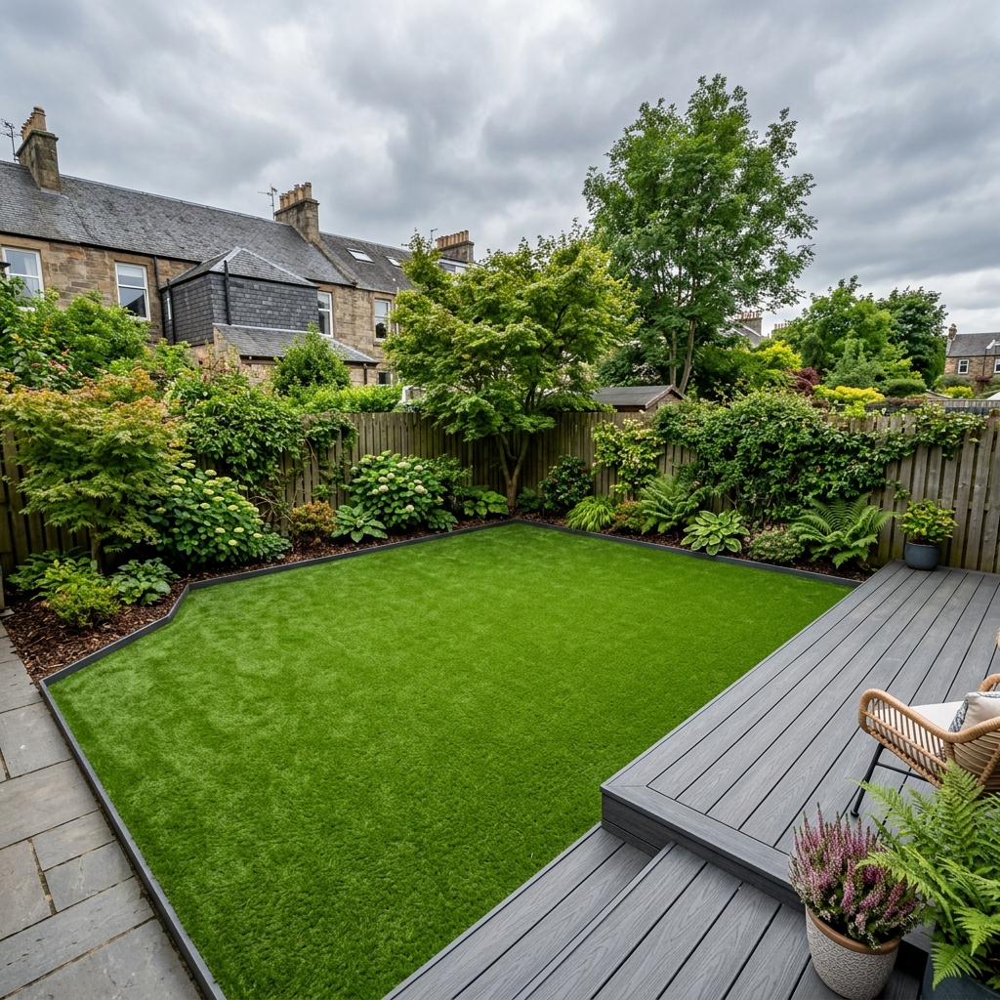
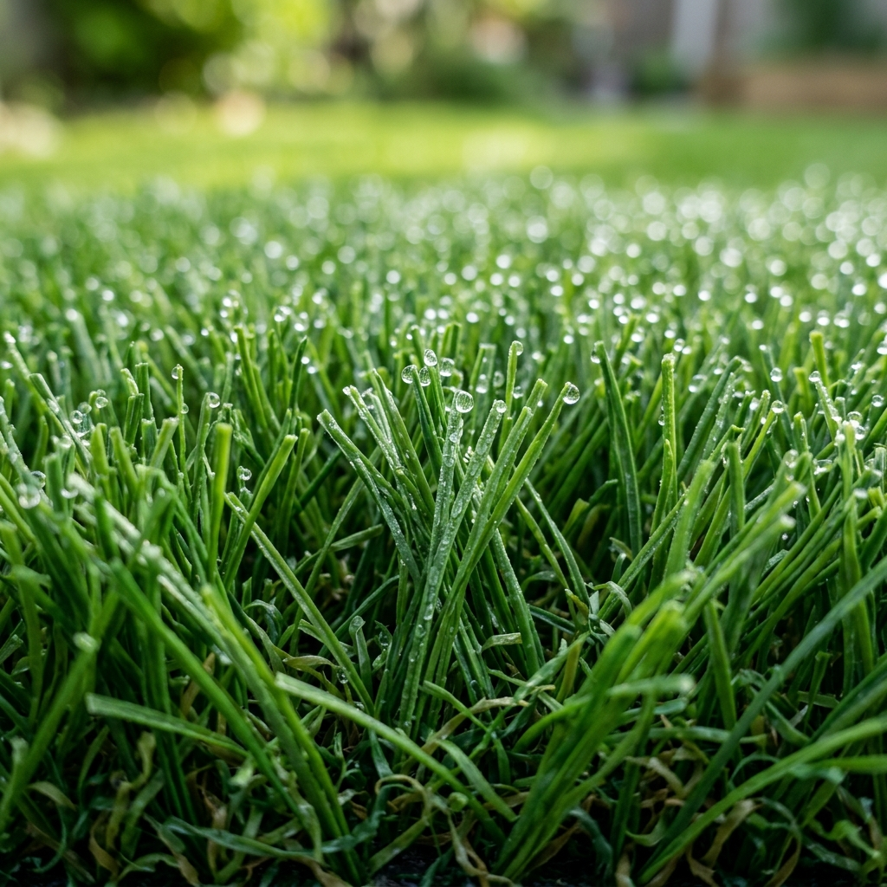
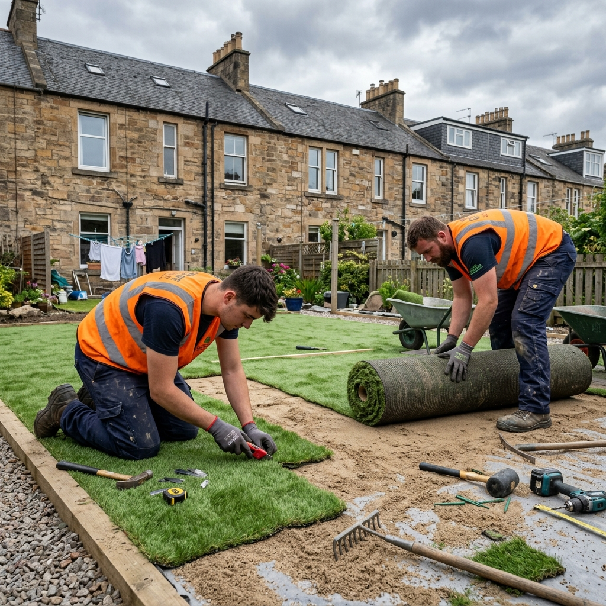

How Much Does Artificial Grass Cost in Glasgow? (2026 Price Guide)

If you're thinking about artificial grass for your Glasgow garden, the first question is always the same: how much is it actually going to cost? You'll find all sorts of figures floating around online — most of them either too vague or based on prices in London or the South East. Here's a straight answer based on what we actually charge here in Glasgow.
We've installed artificial grass across hundreds of gardens in Glasgow, Clydebank, Bearsden, Giffnock, East Kilbride and the surrounding areas. The prices below reflect what a real Glasgow installer charges in 2026 — not some national average pulled from a comparison website.
Why Glasgow Homeowners Are Switching to Artificial Grass
It's pretty obvious when you think about it. Glasgow gets around 170 days of rain a year. Real grass doesn't stand a chance in half the gardens we visit — especially north-facing plots, gardens under tree cover, or anywhere with heavy clay soil. By October, most Glasgow lawns are a muddy mess that kids and dogs are dragging into the house every day.
Artificial grass solves that problem completely. It drains well, it stays green all year, and you never have to mow it. For a lot of families in the south side and east end especially, it's been a game changer for how much they actually use their outdoor space.
We're also seeing a lot of gardens in Pollokshields, Shawlands and Rutherglen where people are pairing artificial grass with composite decking and porcelain paving — the "no maintenance" garden that looks great 12 months a year without lifting a finger.
How Much Does Artificial Grass Cost in Glasgow? (2026 Prices)
These are fully installed prices — they include everything: lifting and removing the old lawn, sub-base preparation, weed membrane, the grass, kiln-dried sand infill, and all edging and fixings.
| Quality Tier | Cost Per m² | 20m² Garden | 35m² Garden | 50m² Garden |
|---|---|---|---|---|
| Budget (25–30mm pile) | £55–£65 | £1,100–£1,300 | £1,925–£2,275 | £2,750–£3,250 |
| Mid-Range (30–37mm) ← Most Popular | £68–£78 | £1,360–£1,560 | £2,380–£2,730 | £3,400–£3,900 |
| Premium (40mm+, pet-friendly) | £82–£90 | £1,640–£1,800 | £2,870–£3,150 | £4,100–£4,500 |
Glasgow Tip: Most of our customers go for the mid-range option. It looks genuinely realistic, drains well in Scottish rainfall, and comes with a 10–15 year product warranty. The budget tier is fine for low-traffic areas but tends to flatten faster with heavy use or dogs.

What Affects the Final Price?
Two gardens the same size can have very different final costs. Here's what we look at when we survey your garden in Glasgow:
- Ground conditions: Clay soil (very common on Glasgow's south side and in East Kilbride) needs a deeper sub-base — usually 75–100mm of compacted MOT Type 1 instead of 50–75mm. Adds roughly £4–£8 per m² to the groundwork cost.
- Garden size and shape: Irregular shapes with lots of cuts and curves mean more grass wastage and more cutting time. Awkward shapes can add 10–15% to the labour cost.
- Access: If we can't get a digger or barrow through to the back garden easily, all the spoil has to be carried out by hand. Very common in Merchant City and West End tenements — that adds time and cost.
- Existing lawn removal: Removing thick, established real turf costs more than stripping a thin, patchy lawn. Old decking or slabs that need lifting first are priced separately.
- Edging material: Nailed timber baton is standard. Steel landscape edging or brick/stone borders add cost but give a much cleaner finish.
- Gradient / slope: Glasgow has a lot of sloped gardens, particularly up towards Bearsden, Milngavie and the north side. Sloped installs take more time and need more careful drainage planning.
Areas of Glasgow We Install Artificial Grass
We work right across Glasgow city and the surrounding towns. Common challenges by area:
Gardens in Bearsden and Milngavie tend to be larger and often on a slope — drainage planning is key up there. In Giffnock and Clarkston, the clay soil is especially stubborn, so we always go deeper on the sub-base. East Kilbride and Rutherglen are very popular for full garden makeovers combining artificial grass with block paving edging.
How to Choose the Right Artificial Grass Installer in Glasgow

There are a lot of guys offering artificial grass in Glasgow at the moment. Some are brilliant. Some will leave you with drainage problems in six months. Here's what to look for:
- Ask about the sub-base depth. If they're going straight onto compacted soil without a proper stone base, walk away. You need at least 50mm of compacted Type 1 aggregate — more if your soil is clay.
- Check they use weed membrane. Without it, you'll have weeds pushing through within a year or two.
- Ask for a warranty on the grass product. Decent artificial grass comes with 10–15 year manufacturer warranties. If they can't tell you the brand or warranty, that's a red flag.
- Get an itemised quote. Any reputable installer will break down: groundwork, materials, labour, and disposal. If you get a single number with no breakdown, push back.
- Look at their actual work. Ask to see photos of completed jobs in similar-sized Glasgow gardens. Look for clean edges, even pile direction, and tidy joins.
Don't just go with the cheapest quote. We've been called in to re-do plenty of artificial grass jobs where someone went with the cheapest option and ended up with waterlogged grass, visible joins, or edges lifting within a year. The re-do costs more than doing it properly the first time.
Frequently Asked Questions
How much does artificial grass cost in Glasgow?
Fully installed in Glasgow, you're looking at £55–£90 per m² depending on the quality of grass. A typical 30m² garden costs £1,650–£2,700 all in. That includes removal of the existing lawn, sub-base, weed membrane, grass supply and installation, and all edging.
Does artificial grass get hot in summer in Scotland?
Rarely a problem up here. You'd need a long stretch of direct, strong sun to get it warm underfoot — and Glasgow summers don't usually give us that. On the handful of hot days we get in July, a quick spray with the garden hose cools it right down in minutes.
How long does artificial grass last in Scotland's climate?
Good quality grass, installed with a proper free-draining sub-base, will last 15–20 years in Scottish conditions. The main enemy isn't rain — it's standing water. That's why the groundwork matters as much as the grass itself.
Can you lay artificial grass on clay soil in Glasgow?
Yes, but it needs to be done properly. Clay holds water badly, so we put down a thicker sub-base — usually 75–100mm of compacted MOT Type 1. This adds a bit to the cost but it's necessary in a lot of Glasgow gardens, particularly on the south side and in East Kilbride.
Does artificial grass need planning permission in Glasgow?
For back gardens, no. Front gardens may have restrictions in conservation areas (parts of the West End, for example), or if the property is listed. We'll flag anything like that when we do a free survey.
More From the Brickscapes Blog
Get a Free Artificial Grass Quote in Glasgow
We cover all areas of Glasgow and the surrounding towns. We'll come and survey your garden, give you an honest assessment, and provide a fully itemised quote — no obligation, no hard sell.